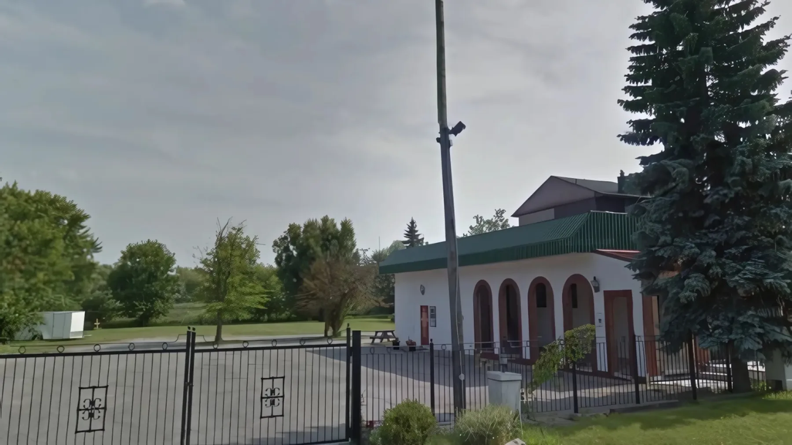

The screenИконостас
The parish of St. Archangel Gabriel keeps a page for every soul it has buried - a story, a voice, a photograph, and a candle that anyone may light from anywhere in the world.
Stone, snow, and one door left standing open.
The screen of icons, and what each mark on it means.
The prayers a parish knows by ear, not by reading.
The wall of arches, and the pages behind them.
Zadušnice, the parastos, and the names read aloud.

Храм49 N Lake RoadA Serbian church in Ontario begins the way it began in Ras: a low stone wall, a gate that is never locked during a service, and a single lamp burning over the west door so that anyone arriving late can still find it in the dark.
Cross the threshold and the building stops being architecture. The narthex is deliberately cold and dim - it is the world you are leaving. Ahead, the nave is warm with beeswax, and above it the dome carries the one thing every Orthodox church says before a word is spoken: that the roof over the faithful is the sky.
Go inside

You are inside now. An icon is not a picture, it is a record. Every mark on it means something, and once you can read them the screen in front of you stops being decoration. Photographs belong to the parish and are used here only for this design demonstration.
A parish does not read these words. It knows them. Here they are in Cyrillic, in Latin letters, and in English, with a voice for anyone far from the church or only starting.
For a child who cannot read Cyrillic and would not interrupt a service to ask, this is how the question still gets asked.
The Liturgy served on nearly every Sunday of the year carries his name.
01 St. Basil the Great
St. Basil the GreatHis longer Liturgy is kept for ten days of the year, Lent among them.
02 St. Seraphim of Sarov
St. Seraphim of SarovGreeted everyone who came to him, in any season, as his joy.
03 St. Nicholas
St. NicholasThe most kept slava in the Serbian calendar, and the patron of travellers.
04Nobody arrives at a parish office knowing the order of things. These are the questions that come first, and the answers the office gives.
Choose a question below.
Design demonstration. These answers were written for this page from the parish's own published information. They are not Father Đurađ's words and are not a substitute for speaking to him: in a live installation the wording would be his, and anything touching a particular family would be settled in the office. Nothing typed here is sent anywhere.
A candle on a screen is an intention. This is a wax candle, on the stand in Richmond Hill, lit by a parishioner at the next Liturgy, photographed where it stands, and the picture sent to you. If you are in Belgrade, Vancouver or Melbourne, this is the closest you can come.
A candle for Milica Petrović - 8 November, after the Liturgy
Design demonstration. Nothing is charged and nothing is sent, and no payment details are asked for or accepted anywhere on this page. In a live installation this would be a payment and a job in the parish office. The candle is always lit, even if the email fails: the photograph is the proof, not the service.
Every arch on this wall opens a Memory Page: a life written down, a recorded voice, photographs, and where a family has chosen it, a time capsule that opens on a set day. Kept for good, and never charged by the month.
A permanent tribute for one person: photographs, recordings, voice and a written life, in one place that does not vanish when a subscription lapses or a platform closes.
Bought once. No monthly subscription to lapse, and no renewal somebody has to remember in twenty years, when the people who opened the page are themselves gone.
A page stays private while a person answers a quiet check-in. When they stop answering, the people they chose are notified. Quiet by design, active when it matters.
A message or recording that opens on a chosen date: an eighteenth birthday, a wedding, an anniversary. It stays sealed until the day comes.
This is a design demonstration. All six people below are fictional. The names, dates and life stories were written only to show how a Memory Page looks. No real parishioner is represented here.
No one matches that search.
The parish holds the remembrance, not the data. A family decides what is public and what stays within the family, and may export or close a page at any time. Parish families may submit a Memory Page through the church office or directly with Saylavy: the parish keeps the archive, the family keeps ownership.
Four Saturdays a year the whole parish prays for its departed at once. On every other day of the calendar a single name is enough. The wall does not close behind anyone - come back to it whenever the anniversary comes round.
With the saints give rest, O Christ, to the souls of Thy servants, where there is neither sickness, nor sorrow, nor sighing, but life everlasting. Kontakion of the memorial serviceReturn to the gate